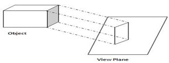
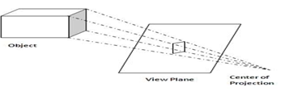

| Sr.No. | Parallel Projection | Perspective Projective |
|---|---|---|
| 1. | Parallel projection resembles seeing objects which are located far from the viewer through a telescope. | Perspective projection is seeing things larger when they’re up close and smaller at a distance. |
| 2 | In parallel projection, Z coordinate is discarded and parallel lines from each vertex on the object are extended until they intersect the view plane. | Perspective Projection transforms object positions to the view plane while converging to a center point of projection. |
| 3 | The point of intersection in parallel projection is called as projection of the vertex. | In this all the projections are converge at a single point called the “center of projection” or “projection reference point”. |
| 4 | We connect the projected vertices by line segments which correspond to connections on the original object. | Perspective Projection transforms object positions to the view plane while converging to a center point of projection. |
| 5 | A parallel projection preserves relative proportions of objects. | Perspective projection produces realistic views but does not preserve relative proportions. |
| 6 | Accurate views of the various sides of an object are obtained with a parallel projection. But not a realistic representation. | Projections of distant objects are smaller than the projections of objects of the same size that are closer to the projection plane. |
| 7 |  |  |